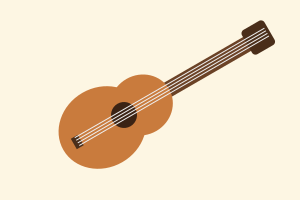

Como comecei

Comecei a aprender violão recentemente. Estudo um pouco todos os dias, começando pelos acordes básicos e pelas batidas mais simples.
Repertório atual
Por enquanto treino principalmente músicas de rock nacional, porque têm acordes acessíveis para iniciantes.
- Ira!
- Raul Seixas
- Legião Urbana
O que tem me ajudado
- Afinar o violão antes de cada treino.
- Treinar a troca entre dois acordes devagar.
- Tocar junto com a música só depois de dominar a batida.